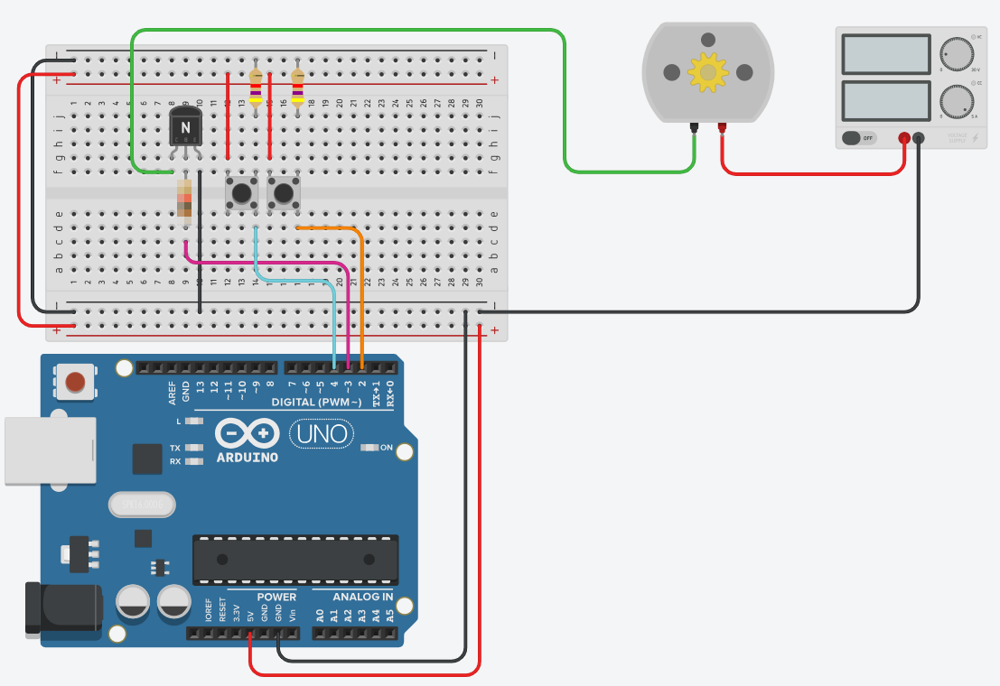

Een startknop laat je motor tien seconden draaien. Een tweede knop is de noodstop, en die moet de motor stilleggen op het moment dat je erop duwt. Dezelfde transistorschakeling als in labo 5, maar nu met een echte veiligheidseis.
Haal de schakeling van DC motor regelen met een transistor erbij. De potentiometer heb je niet meer nodig, de rest blijft staan. Je voegt er twee drukknoppen aan toe.
Deze oefening werk je uit in TinkerCAD.

INPUT_PULLUP voor je knoppen, dan heb je de weerstanden bij die knoppen niet nodig.| Pin | Waarop | Hoe uitgelezen |
|---|---|---|
| pin 2 | De noodstopknop | Met een interrupt |
| pin 3 | De basis van de transistor, via de basisweerstand | Uitgang |
| pin 4 | De startknop | Met digitalRead(), dus gepold |
Net als in labo 5 staat er een vrijloopdiode over de motor, met de streep naar de plus. Hier is ze nog belangrijker dan daar: je schakelt de motor nu hard aan en uit in plaats van hem te dimmen, en dat geeft een grotere spanningspiek. Zie De transistor als schakelaar.
Je hebt twee knoppen en de UNO heeft twee interruptpinnen. Dat lijkt te passen, maar pin 3 stuurt hier je transistor aan. Die is dus bezet, en er blijft maar één interruptpin over.
Dat dwingt je tot een keuze: welke van de twee knoppen krijgt de interrupt?
De noodstop. Altijd. Een startknop die je een halve seconde moet vasthouden is hinderlijk; een noodstop die een halve seconde te laat komt is gevaarlijk.
Dat is geen regeltje uit dit vak, dat is hoe je in de praktijk beslist welk signaal een interrupt verdient: niet het signaal dat het vaakst komt, maar het signaal waarvoor te laat gelijkstaat aan te laat.
Je motor trekt ongeveer 80 mA. Bereken daarmee je basisweerstand, op dezelfde manier als in labo 5.
Vbe = 0,7 V volgens de datasheet.hFE = 200 volgens de datasheet, maar we rekenen net als in labo 5 met 40, dus flink gedeeld, om zeker in saturatie te zitten.Ib = 0,08 A / 40 = 0,002 ARb = (5 V - 0,7 V) / 0,002 A = 2150 Ω, dus je neemt 2,2 kΩ.Doe je dat wel, dan kom je op ongeveer 10 kΩ uit. Rekenkundig klopt dat, maar elektrisch niet. Die 200 is een typische waarde bij één bepaalde meting; een exemplaar uit je doos kan er ver onder zitten. Met 0,4 mA basisstroom schakelt je transistor dan niet volledig door, blijft er spanning over hem staan en wordt hij warm in plaats van dat hij schakelt.
In labo 5 dimde je met PWM, en dan is een transistor die niet helemaal doorschakelt vooral inefficient. Hier schakel je hard aan en uit, en dan is het net het punt van de hele schakeling. Neem de marge.
delay(10000). Je hoeft de knop niet ingedrukt te houden.Start de motor, wacht twee seconden en druk dan op de noodstop. Kijk goed naar wat er gebeurt: de motor stopt meteen, maar de lijn "Motor gestopt" verschijnt pas acht seconden later.
Dat is geen bug. Dat is het bewijs dat je loop() al die tijd muurvast zat in zijn delay(), terwijl je motor allang stilstond. Precies daarom moest die digitalWrite() in je ISR staan en niet achter de vlag.
Sla je oefening op.
Overloop volgende checklist om je oefening zelf te evalueren:
Let op de eerste regels van de loop(): die return zorgt ervoor dat de startknop na een noodstop niet meer bekeken wordt. Dat is het beleid dat de vlag afdwingt.
const int motorPin = 3; // via de basisweerstand naar de basis van de transistor
const int startPin = 4; // gepold: pin 2 en 3 zijn al bezet
const int noodstopPin = 2; // de enige interruptpin die nog vrij is
const unsigned long draaiTijd = 10000;
volatile bool noodstop = false;
void noodstopIngedrukt()
{
digitalWrite(motorPin, LOW); // de motor stopt nu, niet straks
noodstop = true; // en hij mag daarna niet meer starten
}
void setup()
{
pinMode(motorPin, OUTPUT);
digitalWrite(motorPin, LOW);
pinMode(startPin, INPUT_PULLUP);
pinMode(noodstopPin, INPUT_PULLUP);
Serial.begin(9600);
attachInterrupt(digitalPinToInterrupt(noodstopPin), noodstopIngedrukt, FALLING);
}
void loop()
{
if (noodstop == true)
{
return; // na een noodstop doen we niets meer
}
if (digitalRead(startPin) == LOW) // ingedrukt
{
delay(50); // even de dendering laten uitsterven
Serial.println("Motor start");
digitalWrite(motorPin, HIGH);
delay(draaiTijd);
digitalWrite(motorPin, LOW);
Serial.println("Motor gestopt");
}
}Terwijl de motor draait, zit je loop() in delay(draaiTijd). Druk je in die tijd op de startknop, dan merkt je programma daar niets van. Dat is hier niet erg, want de motor draait toch al.
Maar het is wél precies de reden waarom de noodstop een interrupt kreeg. Zet die knop eens als proef op pin 5 en lees hem uit met digitalRead(): je zal hem tien seconden lang moeten vasthouden voor er iets gebeurt. Dat is het probleem uit Van pollen naar interrupts, en je voelt het hier aan een draaiende motor.
Wil je dat je programma ook meteen réágeert in plaats van alleen de motor stil te leggen, dan vervang je die delay(draaiTijd) door een wachtlus die ondertussen naar de vlag kijkt:
unsigned long start = millis();
while (millis() - start < draaiTijd && noodstop == false)
{
// wachten, maar wel met de ogen open
}Nu verschijnt "Motor gestopt" meteen. Merk op dat de motor daarmee geen milliseconde sneller stopt: dat deed de ISR al. Je wint alleen dat de rest van je programma niet blijft hangen. Bij een echte machine is dat het verschil tussen een noodstop die werkt en een noodstop die werkt en het meldt.
Dat is ook meteen de techniek die je in de laatste oefening van dit labo nodig hebt.
Ja. Pin 3 werd hier gebruikt voor de motor omdat labo 5 dat ook deed, niet omdat het moest. Verhuis je de motor naar pin 5, dan komt pin 3 vrij en kunnen béide knoppen een interrupt krijgen.
Dat is dus een keuze, geen beperking. Handig om te weten wanneer je zelf een schakeling ontwerpt: verdeel je pinnen zo dat de twee interruptpinnen overblijven voor de signalen die ze echt nodig hebben.